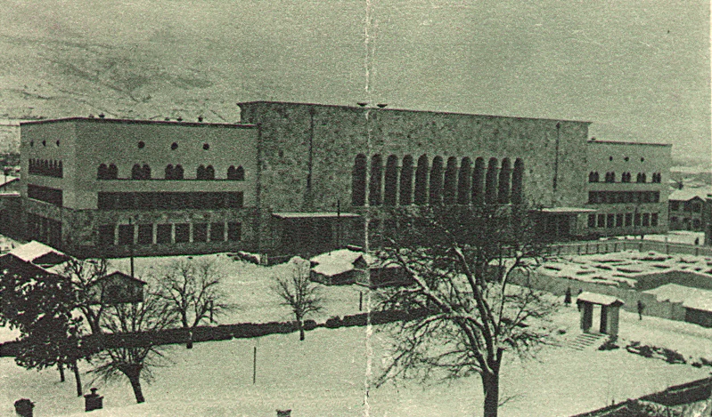

Der Zug kommt an
- Drehbuch und Regie
- Trajče Popov
- Kameramann
- Branko Mihajlovski
- Jahr
- 1951
- Dauer
- 00:09

Der alte Bahnhof vom Ende des 19. Jahrhunderts. Er wurde 1873 in der Zeit des Osmanischen Reiches erbaut. Die Postkarte zeigt den Haupteingang des Bahnhofs; dahinter lagen die Gleise. Die Architektur trägt neoklassizistische Züge. Im Vordergrund eine Verkäuferin von Milchprodukten.

Der alte Bahnhof vom Ende des 19. Jahrhunderts. Er wurde 1873 in der Zeit des Osmanischen Reiches erbaut. Die Postkarte zeigt den Haupteingang des Bahnhofs; dahinter lagen die Gleise. Die Architektur trägt neoklassizistische Züge.

Der erste Bahnhof. Von der Rückseite aufgenommen. (Anfang des 20. Jahrhunderts)

Der alte Bahnhof von der Rückseite. (Anfang des 20. Jahrhunderts)

Der „neue Bahnhof“ - sein Bau begann 1937. Am 1. Dezember 1940 wurde er eröffnet, obwohl der Bahnsteig noch nicht fertig und die Gestaltung der Säulen unvollendet war. Er zeichnet sich durch moderne Formen und die Interpretation byzantinischer, romantischer und folkloristischer Formen aus. Beim verheerenden Erdbeben vom 26. Juli 1963 stürzten 2/3 des Gebäudes ein. Das verbliebene Drittel wurde saniert und beherbergt heute das Museum der Stadt Skopje. Heute ist das Gebäude ein Mahnmal des verheerenden Erdbebens vom 26. Juli 1963. Die stehengebliebene Uhr über dem Eingang des Museums zeigt 5 Uhr 17 - den tragischen Augenblick des 26. Juli 1963.

Der Bahnhof während des Zweiten Weltkriegs.

Der Bahnhof nach dem Zweiten Weltkrieg (das heutige Museum der Stadt Skopje), von der Seite des Haupteingangs.

Der Bahnhof nach dem Zweiten Weltkrieg (das heutige Museum der Stadt Skopje), von der Bahnsteigseite.

Der Bahnsteig des Bahnhofs - 1940.

Der Bahnhof im Bau - von der Rückseite aufgenommen - 1940er Jahre.

Der Bahnhof im Bau - von der Vorderseite aufgenommen - 1940er Jahre.

Collagen-Postkarte, die in vier Fotos die Geschichte der Bahnhöfe in Skopje zeigt.

Das neue Verkehrszentrum. (1980er Jahre)

 Aquädukt4 Postkarten
Aquädukt4 Postkarten Kale30 Postkarten
Kale30 Postkarten Brücken60 Postkarten
Brücken60 Postkarten Kai58 Postkarten
Kai58 Postkarten Platz46 Postkarten
Platz46 Postkarten Bauten66 Postkarten
Bauten66 Postkarten Christliche Gotteshäuser19 Postkarten
Christliche Gotteshäuser19 Postkarten Muslimische Bauten33 Postkarten
Muslimische Bauten33 Postkarten Offiziersheim29 Postkarten
Offiziersheim29 Postkarten Theater28 Postkarten
Theater28 Postkarten Bahnhof13 Postkarten
Bahnhof13 Postkarten Schulen36 Postkarten
Schulen36 Postkarten Parks12 Postkarten
Parks12 Postkarten Märkte18 Postkarten
Märkte18 Postkarten Straßen38 Postkarten
Straßen38 Postkarten Panorama I60 Postkarten
Panorama I60 Postkarten Panorama II30 Postkarten
Panorama II30 Postkarten Collagen55 Postkarten
Collagen55 Postkarten Hochwasser9 Postkarten
Hochwasser9 Postkarten Erdbeben27 Postkarten
Erdbeben27 Postkarten Skopje 200026 Postkarten
Skopje 200026 Postkarten